;){kind=link}
Kei Karama, capitán de la selección de fútbol de Sierra Leona, ha comparado la devastación causada por el brote de Ébola con una película de zombis. El pasado mes de julio, el Ministerio de Salud de Seychelles advirtió a la Federación de Fútbol del mismo país que se oponía al partido clasificatorio entre Seychelles y Sierra Leona, y notificó a las dos federaciones involucradas que la oficina de inmigración restringiría el acceso a los seleccionados sierraleoneses.
Atormentados siempre por la constante amenaza de la malaria, el Ébola se suma a muchas otras circunstancias negativas. El continente africano ha sufrido la mala organización territorial heredada de los tiempos coloniales. A partir de los procesos de independencia, los conflictos étnicos y las dictaduras son el comportamiento común de la mayoría de los países. Si a ello le sumamos la pobreza extrema y el poco desarrollo, el resultado es el de un lugar poco amigable para visitar.
Acostumbrados al glamour de Europa, los equipos de África pueden enfrentar eliminatorias en temperaturas cercanas a la congelación y el siguiente partido en un infierno veraniego.
Para las próximas semifinales, el equipo argelino ES Sétif deberá trasladarse desde Sétif, Argelia, a la República Democrática del Congo. Ciento veinte horas de automóvil, o en su defecto un día completo en avión. La distancia no supone tanto tiempo de traslado, ocurre que el viaje sólo se puede realizar con escala en Europa.
Atormentados siempre por la constante amenaza de la malaria, el Ébola se suma a muchas otras circunstancias negativas. El continente africano ha sufrido la mala organización territorial heredada de los tiempos coloniales. A partir de los procesos de independencia, los conflictos étnicos y las dictaduras son el comportamiento común de la mayoría de los países. Si a ello le sumamos la pobreza extrema y el poco desarrollo, el resultado es el de un lugar poco amigable para visitar.
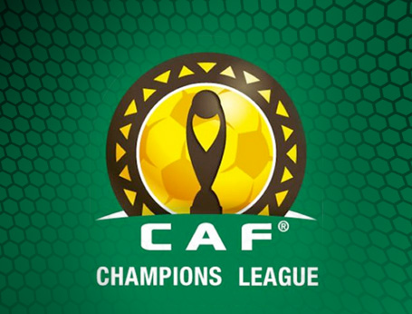
El Ébola es sólo una de las situaciones desagradables a las que los futbolistas que juegan en África deben enfrentar. En el continente donde la corrupción es el deporte más practicado después del fútbol, jugar la CAF Champions League puede ser más un reto de sobrevivencia que un premio por ser campeón nacional.
Acostumbrados al glamour de Europa, los equipos de África pueden enfrentar eliminatorias en temperaturas cercanas a la congelación y el siguiente partido en un infierno veraniego.
Para las próximas semifinales, el equipo argelino ES Sétif deberá trasladarse desde Sétif, Argelia, a la República Democrática del Congo. Ciento veinte horas de automóvil, o en su defecto un día completo en avión. La distancia no supone tanto tiempo de traslado, ocurre que el viaje sólo se puede realizar con escala en Europa.
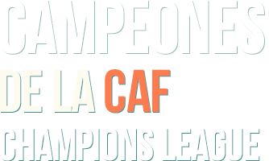
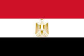
EGIPTO
14
Al Ahly
[ 8 ]
Zamalek SC
[ 5 ]
Ismaily SC
[ 1 ]

RD CONGO
5
TP Mazembe
[ 4 ]
AS Vita Club
[ 1 ]
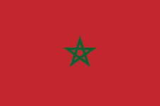
MARRUECOS
5
Raja CA Casablanca
[ 3 ]
FAR Rabat
[ 1]
Wydad Casablanca
[ 1 ]
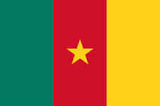
CAMERÚN
5
Canon Yooundé
[ 3 ]
US Douala
[ 1]
Oryx Douala
[ 1 ]
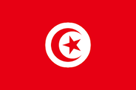
Túnez
4
ES Túnez
[ 2 ]
ES Sahel
[ 1 ]
Club Africain
[ 1 ]
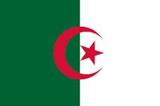
ARGELIA
4
JS Kabylie
[ 2 ]
ES Setif
[ 1 ]
MC Alger
[ 1 ]
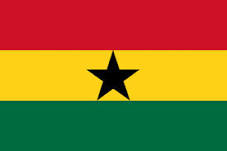
GHANA
3
Asante Kotoko SC
[ 2 ]
Accra Hearts of Oaks SC
[ 1 ]

GUINEA
3
Hafia FC
[ 3 ]
NIGERIA
2
AEnyimba International FC
[ 2 ]

COSTA DE MARFIL
2
ASEC Mimosas
[ 1 ]
Stade d’Abidjan
[ 1 ]
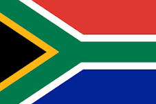
SUDÁFRICA
1
Orlando Pirates FC
[ 1 ]
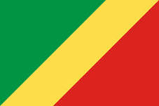
CONGO
1
CARA Brazzaville
[ 1 ]
Algunos equipos han optado por tener su propio medio de transporte. Eliminados en alguna ocasión por no poder realizar el viaje debido a falta de vuelos, el TP Mazembe de la República Democrática del Congo decidió comprar su propio avión. Moise Katumbi, presidente del club, afirmó que la compra del avión estaba en línea con su ambición de convertirse en el club más grande del continente. Pese a la inversión en medios de transporte, la Confederación Africana de Fútbol (CAF) decidió expulsar hace dos años al TP Mazembe por alinear a un jugador inelegible.
Competir es difícil, hacerlo de visita es más. A la falta de comunicación entre países hay que agregar las diferencias en infraestructura. No es lo mismo jugar en el Borg El Arab de Egipto, que en el Estadio Polideportivo Idriss Mahamat Ouya de N’Djamena en Chad. Además, las reglas de la CAF hacen responsable a los equipos locales del transporte local y el hospedaje del equipo visitante. Si los equipos dependen de ello, se puede decir que han perdido la mitad del partido.
Aprovechando el reglamento de la CAF, los equipos locales suelen debilitar a sus contrapartes suministrando autobuses descompuestos, incluso con asientos de improvisados de madera. En temperaturas extremas, designar hoteles sin refrigeración o calefacción puede ser más letal que cualquier delantero de clase mundial. La alteración de los alimentos o el agua supera cualquier contragolpe en la cancha.
Para sobreponerse a las circunstancias, los equipos deben consultar con su embajada o consulado las mejores opciones de hospedaje, y solicitar la comida de algún connacional que tenga un restaurante en el área. Pero un compatriota puede ser tan ajeno como un europeo, a veces hay que buscar a un coterráneo, o a un miembro de la misma tribu. Una vez instalados, subsanada la necesidad de transporte, los equipos deben tener cuidado de las sorpresas en los vestuarios y en la cancha.
"Los espíritus y los militares han sido fieles compañeros de cama del fútbol africano."
Aprovechando el reglamento de la CAF, los equipos locales suelen debilitar a sus contrapartes suministrando autobuses descompuestos, incluso con asientos de improvisados de madera. En temperaturas extremas, designar hoteles sin refrigeración o calefacción puede ser más letal que cualquier delantero de clase mundial. La alteración de los alimentos o el agua supera cualquier contragolpe en la cancha.
Para sobreponerse a las circunstancias, los equipos deben consultar con su embajada o consulado las mejores opciones de hospedaje, y solicitar la comida de algún connacional que tenga un restaurante en el área. Pero un compatriota puede ser tan ajeno como un europeo, a veces hay que buscar a un coterráneo, o a un miembro de la misma tribu. Una vez instalados, subsanada la necesidad de transporte, los equipos deben tener cuidado de las sorpresas en los vestuarios y en la cancha.
En los casos más extremos el vudú es el jugador número doce de los locales. En la mayoría de los casos, el juju, entendido en occidente como suerte o karma, suele propagarse desde la tribuna hacia la cancha, o entre vestuarios. Lavar con detergente el vestuario y untarlo después con aceite, es una de las opciones más utilizadas para enfrentar las artes ocultas. El petróleo crudo, al ser un aceite natural proveniente de fósiles, según la creencia regional neutraliza todo.
En alguna ocasión los militares de Burundi interrumpieron un partido para que el árbitro pitara un penalti a favor de su equipo; en la final del 2000, Chokri El Ouaer, portero del Espérance de Tunez, se disfrazó de Roberto Rojas e intentó cancelar el encuentro fingiendo tener una herida producto de un objeto lanzado desde la tribuna. Richard Kapuscinski describió en Ébano un mundo paranoico y obsesivo de prevenciones, aversiones y prejuicios étnicos. La African Champions League es el torneo en el que se juega con todo en contra, tan difícil de disputar que en ocasiones parece imposible ganar.
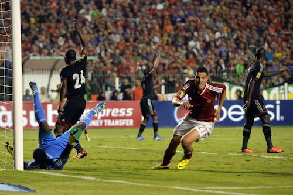
Pocas veces el dejar a alguien con la mano extendida puede ser tan provechoso, por más vulgar que parezca. Un saludo con el puño es menos arriesgado que las malas vibras de un saludo normal. El misticismo no se entrena, pero se emplea tanto como el buen control de la pelota para intentar afectar al adversario, o para intentar protegerse de las artes ocultas del contrario. Los espíritus y los militares han sido fieles compañeros de cama del fútbol africano.
En alguna ocasión los militares de Burundi interrumpieron un partido para que el árbitro pitara un penalti a favor de su equipo; en la final del 2000, Chokri El Ouaer, portero del Espérance de Tunez, se disfrazó de Roberto Rojas e intentó cancelar el encuentro fingiendo tener una herida producto de un objeto lanzado desde la tribuna. Richard Kapuscinski describió en Ébano un mundo paranoico y obsesivo de prevenciones, aversiones y prejuicios étnicos. La African Champions League es el torneo en el que se juega con todo en contra, tan difícil de disputar que en ocasiones parece imposible ganar.
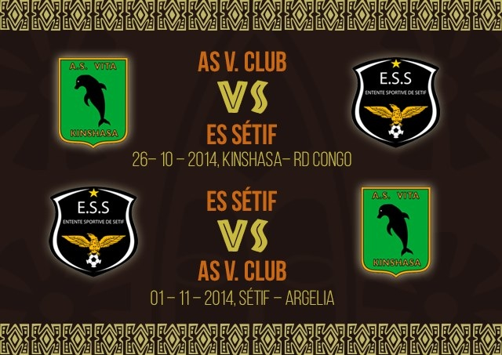
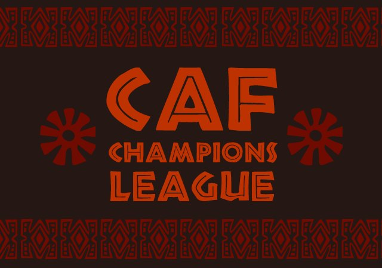
<<<<<<< HEAD
=======
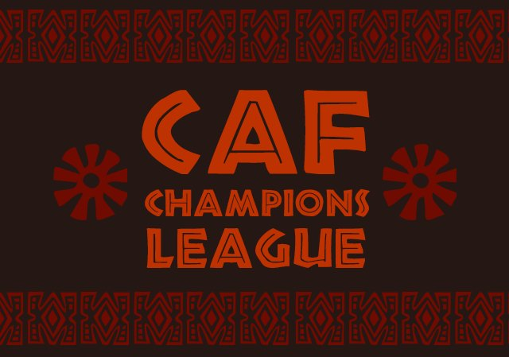
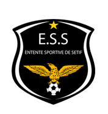
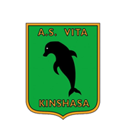
>>>>>>> FETCH_HEAD
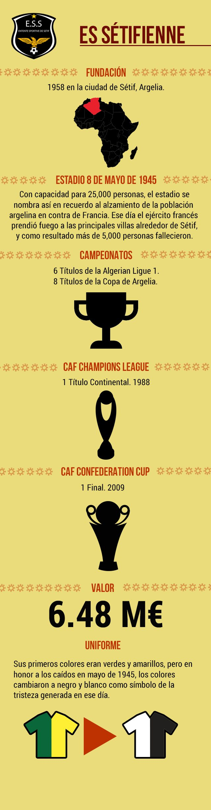
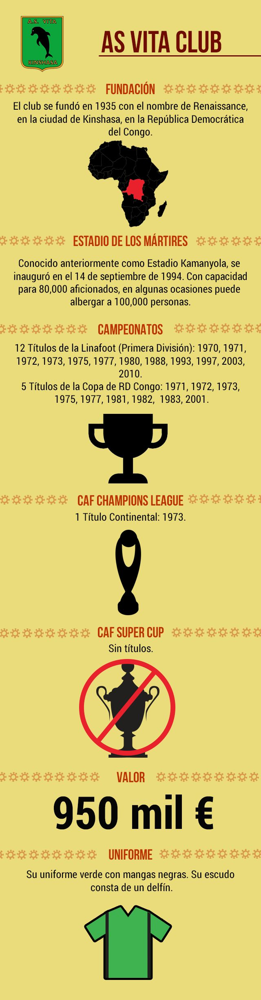
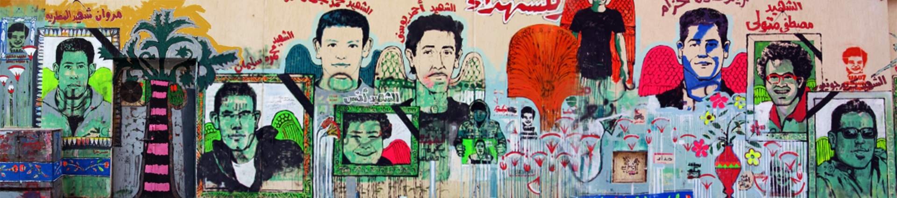
Graffiti que conmemora a las víctimas de Port Said. Calle Mohamed Mahmoud, El Cairo, Egipto.
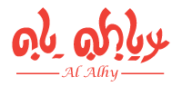
El último campeón de África.
Dicen que la violencia está en nuestra sangre.
¿Cómo nos atrevemos a luchar por nuestros derechos?
Régimen estúpido.
Escucha lo que decimos:
¡Libertad!
¡Libertad!
¡Libertad!
E se es uno de los cánticos que los seguidores de Al Ahly pronunciaban antes de la caída del régimen de Mubarak. Paradójicamente, aquellos hinchas a los que se les permitió crecer porque no alteraban el orden impuesto fueron los que ayudaron a prevenir que las fuerzas de seguridad desplazaran a los participantes de la protesta en la Plaza Tahrir. Fueron ellos quienes mantuvieron viva la esperanza de un pueblo en busca de un cambio.
Una multitud fue capaz de derrocar el autoritarismo de Hosni Mubarak, pero fue también una multitud la que sumergió al fútbol egipcio en una obscura tragedia. La desventura de Port Said fue el precio de la hinchada por su libertad. Setenta y dos muertos en el estadio y dos más en la plaza fue la ofrenda a la revolución.
En 2012, sin una liga doméstica en dónde jugar, el Al Ahly se embarcó en la difícil travesía de conquistar la African Champions League. El viaje que comenzó en Etiopía haría escala en Mali, donde por irónico que parezca, el equipo tuvo que sobreponerse a un golpe de Estado destinado a derrocar al presidente Amadou Toumani Touré.
Tras empatar en el partido de ida en tierras egipcias, el Al Ahly tuvo que definir la copa frente al Espérance de Túnez en suelo ajeno. Y fue en Túnez donde los egipcios se sobrepusieron a ser visitantes, a no jugar los fines de semana y al recuerdo de Port Said. El Al Ahly, actual campeón, pues ganaría también el año siguiente, rendiría con aquel trofeo un homenaje a la gente que murió. Así lo señaló su capitán Mohamed Aboutrika, quien por siempre recordará como un seguidor murió en sus brazos en el vestidor de Puerto Saíd mientras le decía que siempre quiso conocerlo.
El último campeón de África.
Dicen que la violencia está en nuestra sangre.
¿Cómo nos atrevemos a luchar por nuestros derechos?
Régimen estúpido.
Escucha lo que decimos:
¡Libertad!
¡Libertad!
¡Libertad!
E se es uno de los cánticos que los seguidores de Al Ahly pronunciaban antes de la caída del régimen de Mubarak. Paradójicamente, aquellos hinchas a los que se les permitió crecer porque no alteraban el orden impuesto fueron los que ayudaron a prevenir que las fuerzas de seguridad desplazaran a los participantes de la protesta en la Plaza Tahrir. Fueron ellos quienes mantuvieron viva la esperanza de un pueblo en busca de un cambio.
Una multitud fue capaz de derrocar el autoritarismo de Hosni Mubarak, pero fue también una multitud la que sumergió al fútbol egipcio en una obscura tragedia. La desventura de Port Said fue el precio de la hinchada por su libertad. Setenta y dos muertos en el estadio y dos más en la plaza fue la ofrenda a la revolución.
En 2012, sin una liga doméstica en dónde jugar, el Al Ahly se embarcó en la difícil travesía de conquistar la African Champions League. El viaje que comenzó en Etiopía haría escala en Mali, donde por irónico que parezca, el equipo tuvo que sobreponerse a un golpe de Estado destinado a derrocar al presidente Amadou Toumani Touré.
Tras empatar en el partido de ida en tierras egipcias, el Al Ahly tuvo que definir la copa frente al Espérance de Túnez en suelo ajeno. Y fue en Túnez donde los egipcios se sobrepusieron a ser visitantes, a no jugar los fines de semana y al recuerdo de Port Said. El Al Ahly, actual campeón, pues ganaría también el año siguiente, rendiría con aquel trofeo un homenaje a la gente que murió. Así lo señaló su capitán Mohamed Aboutrika, quien por siempre recordará como un seguidor murió en sus brazos en el vestidor de Puerto Saíd mientras le decía que siempre quiso conocerlo.
Santiago Cordera
Competir en África no parece una tarea sencilla. Imaginarla a partir de este escenario que recreamos, en el que se mezclan pobreza, política, e infraestructura deportiva, para dar como resultado la organización del mejor torneo africano, parece una labor más sencilla para los que estamos alejados de ese balompié.
En juanfutbol decidimos abordar esta temática no sólo porque resulta esclarecedor conocer las diferencias que existen entre el futbol africano y el mexicano, sino porque consideramos importante reflexionar sobre el papel que juegan los factores económicos, políticos, y de infraestructura deportiva, en la importación y exportación de jugadores locales al extranjero.
Es importante acentuar que estos contenidos a profundidad, que requieren tiempo de lectura, merecen un empaquetamiento artesanal, más parecidos a lo que uno podría encontrar en una revista, con un diseño único y elementos de programación que permitan una experiencia interactiva inolvidable.
Si es verdad que el balompié africano no ocupa un lugar preponderante en la agenda de los lectores aficionados a este deporte, en juanfutbol queremos acercarte a esas latitudes lejanas y oscuras, ofrecerte historias de carne y hueso, y acercarte a ese otro futbol que no acapara reflectores pero que debe ser atendido con el mismo interés y rigor periodístico.
En juanfutbol decidimos abordar esta temática no sólo porque resulta esclarecedor conocer las diferencias que existen entre el futbol africano y el mexicano, sino porque consideramos importante reflexionar sobre el papel que juegan los factores económicos, políticos, y de infraestructura deportiva, en la importación y exportación de jugadores locales al extranjero.
Es importante acentuar que estos contenidos a profundidad, que requieren tiempo de lectura, merecen un empaquetamiento artesanal, más parecidos a lo que uno podría encontrar en una revista, con un diseño único y elementos de programación que permitan una experiencia interactiva inolvidable.
Si es verdad que el balompié africano no ocupa un lugar preponderante en la agenda de los lectores aficionados a este deporte, en juanfutbol queremos acercarte a esas latitudes lejanas y oscuras, ofrecerte historias de carne y hueso, y acercarte a ese otro futbol que no acapara reflectores pero que debe ser atendido con el mismo interés y rigor periodístico.
@santicordera